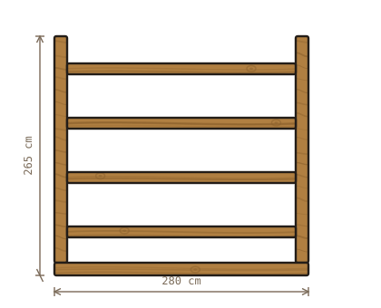
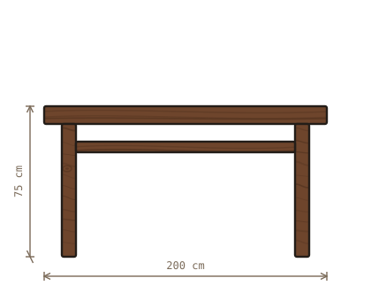
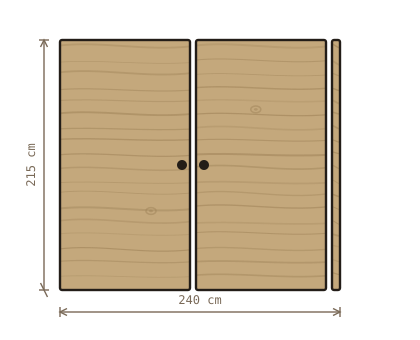
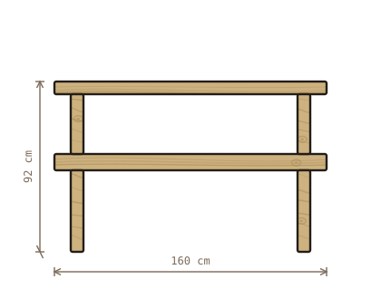
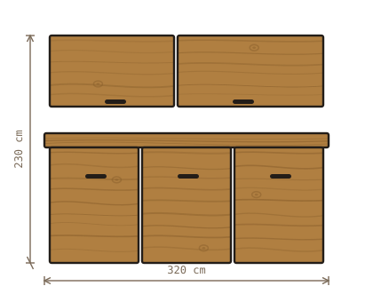
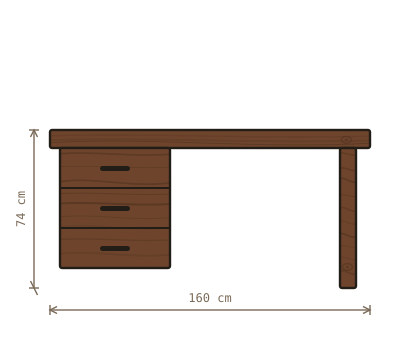
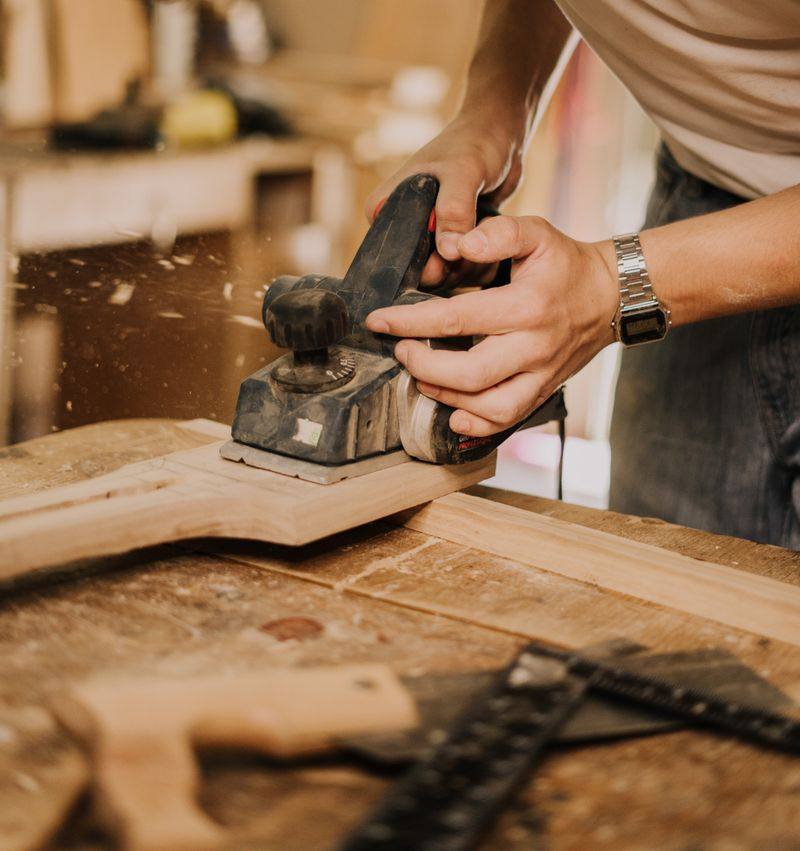
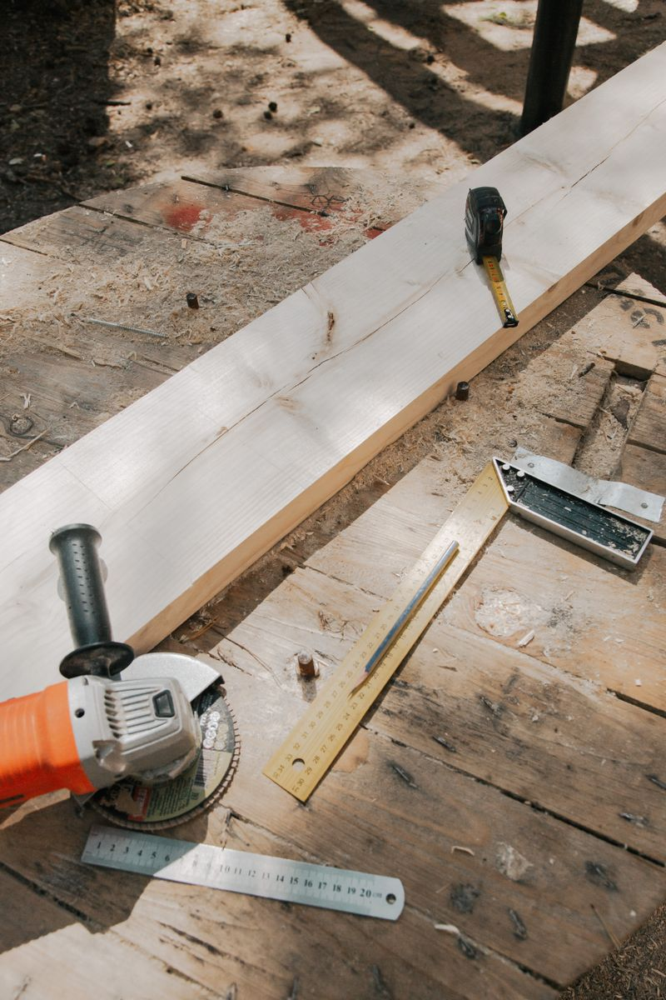

Betanzos · carpintería a medida · desde 2005
Lo que encaja no necesita tornillos
Hacemos muebles para huecos que no son estándar: el bajo de la escalera, la pared con el contador, el pasillo de ochenta y siete centímetros. Se mide, se dibuja, se corta y se ensambla aquí mismo.
- 0años de taller
- 0de plazo medio
- 0cuesta el presupuesto
01 — Muebles
Seis que hemos hecho más de una vez
No es un catálogo: es lo que más nos piden, con las medidas del último que salió del taller. El tuyo tendrá otras, porque tu hueco es otro.
-

Estantería Ponte
Roble macizo · 280 × 265 cm · cuatro baldas
De suelo a techo y ensamblada en caja y espiga. Las baldas se pueden subir o bajar antes de montarla, no después.
desde 1.180 €
-

Mesa Serrín
Nogal · 200 × 90 × 75 cm · seis u ocho sitios
Tablero de una pieza cuando la tabla lo permite y de dos cuando no. Las patas se desmontan para subirla por la escalera.
desde 1.640 €
-

Frente Barrica
Fresno · 240 × 215 cm · dos hojas
Frente de armario empotrado, con el interior en tablero laminado. Es lo que más se pide en pisos viejos, donde no hay dos huecos iguales.
desde 1.950 €
-

Banco Cantón
Pino tratado · 160 × 92 cm · exterior
Para entrada o para galería. Aguanta la lluvia si se le da aceite una vez al año; si no, se pone gris, que a mucha gente le gusta más.
desde 540 €
-

Cocina Fornos
Roble y tablero hidrófugo · 320 × 230 cm
Frentes de madera y cuerpos de tablero, que es lo sensato en una cocina. La encimera la pone el marmolista, nosotros dejamos la medida.
desde 4.200 €
-

Escritorio Fento
Nogal · 160 × 70 × 74 cm · tres cajones
Cajones con guía de madera, de los que hacen ruido de cajón. Se puede pasar el cable por detrás sin que se vea.
desde 980 €
Modelos, medidas y precios inventados para esta demostración. Los alzados están dibujados en SVG para la plantilla: no son obra de ningún taller real.
02 — Cómo trabajamos
De la visita al montaje, cinco pasos
-
01
La visita
Vamos a tu casa con el metro. Medimos el hueco, miramos por dónde pasan los cables y preguntamos qué vas a guardar ahí dentro.
Gratis · 45 min
-
02
El dibujo
Un alzado como los de arriba, con las medidas escritas. Se cambia las veces que haga falta hasta que lo ves claro.
3 a 5 días
-
03
El presupuesto
Cerrado y por escrito, con la madera y los herrajes detallados. Si sube algo durante la obra, se avisa antes, no después.
Sin compromiso
-
04
El taller
Corte, ensamble y acabado. Aquí es donde están las cuatro semanas: la madera maciza hay que dejarla asentar entre fase y fase.
3 a 5 semanas
-
05
El montaje
Un día en casa, con aspirador. Si el suelo está desnivelado —y lo está casi siempre—, se ajusta allí mismo.
1 jornada

03 — Maderas
Cuatro maderas y para qué sirve cada una
| Madera | Precio | Para qué va bien |
|---|---|---|
| Pino del país | € | Exterior, estanterías de trastero y todo lo que se vaya a pintar. |
| Roble | €€€ | Lo que se usa todos los días: mesas, cocinas, escaleras. Dura una vida. |
| Fresno | €€ | Claro y elástico. Buen término medio para armarios y frentes grandes. |
| Nogal | €€€€ | Para una pieza sola que quieras que se note. No lo recomendamos para toda una casa. |
04 — El taller
Tres personas, 400 metros y mucho serrín
-
Manuel Andrade
Carpintero · fundador
Abrió el taller en 2005 después de quince años en una fábrica de puertas. Es quien va a medir y quien dibuja.
-
Xiana Andrade
Carpintera · ensamble y acabados
Segunda generación, con formación en restauración. Lleva los acabados y las piezas que hay que rehacer de un mueble viejo.
-
Fermín Doce
Montaje y corte
Lleva la escuadradora y los montajes en casa. Si tu suelo tiene dos centímetros de desnivel, lo va a saber antes que tú.

Personas inventadas para esta demostración.
05 — Presupuesto
Rúa do Serrín, 12
Comprobando el horario…
Rúa do Serrín, 12 · polígono de Piadela15300 Betanzos
981 00 00 58
hola@espiga.example
- Lunes a viernes
- 08:30–13:30 · 15:30–19:00
- Sábado y domingo
- Cerrado
El taller se puede visitar sin avisar, pero si vienes a ver madera es mejor llamar: la que está buena no siempre está a la vista.
El mapa se carga solo si lo pides: hasta entonces esta web no llama a ningún servidor de terceros.